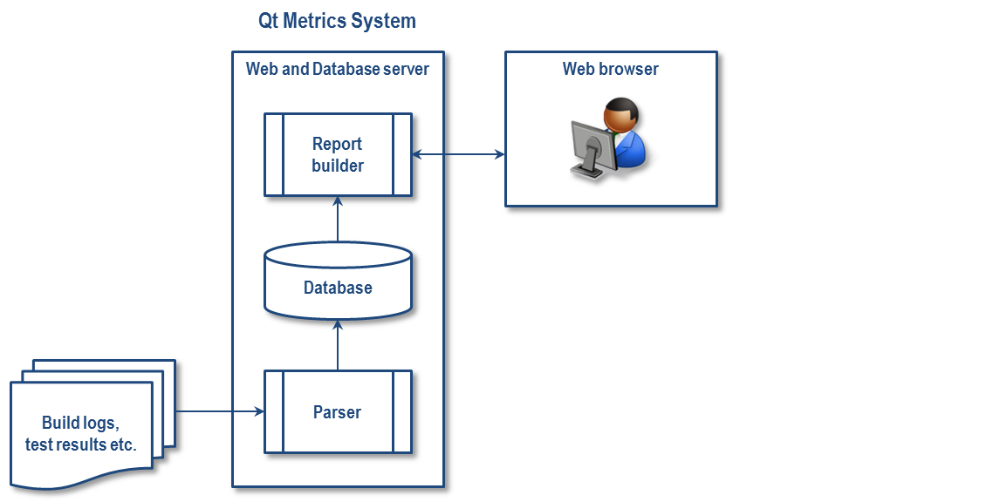
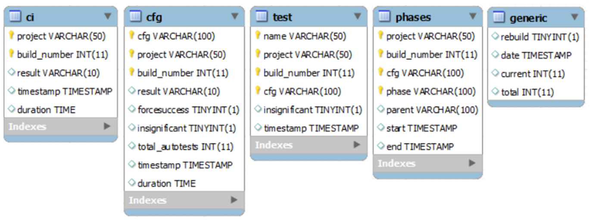

Qt Metrics Page Description
| Please see Qt Metrics 2 Description for the renewed Qt Metrics site |
Contents
INTRODUCTION
The Qt Metrics web portal visualizes the progress of Qt's quality, focusing on Continuous Integration (CI), code coverage, autotest, release test automation, manual test metrics, and other reports later on. The goal is to automate laborious manual work that is required, for example, in the CI release cycle, to report the key information, as well as providing real time data with good performance. The Qt integration teams (in Digia) and the global Qt developer community are the target audience.
Qt Metrics page: (shutted down)
Version: This document is updated against the report builder v2.8
This document is divided in chapters; each chapter having its own purpose and target audience:
2. System Requirements: Why (needs and rationale for solution selections)
3. Using the System: What (what the users see)
4. Detailed Description: How it works (quick overview to implementation)
5. Developing and Maintenance: How to develop it (how to create new metrics/pages)
System Overview
The Qt Metrics system consists of three main components: the parser, the report builder and the database. See Picture 1. The parser reads the build logs, test results, or other files that are created in the development process, and pushes the data into the database. The report builder reads the data from the database, and shows predefined metrics and reports where the user is able to scope and filter the information from. The parser is implemented with Perl and the report builder with HTML, CSS, PHP and Ajax with some jQuery UI and D3 graphics components. The database is a MySQL database.

PICTURE 1. Generic system architecture
_
SYSTEM REQUIREMENTS
A few requirements were set for the metrics system in the beginning of the development. They are explained below with a brief solution description.
Requirement: since Qt Project is heavily based on open source, it would be good to use open source technologies on both the metrics system backend and the frontend solutions.
Solution: the backend (parser and database) and the frontend (report builder) are implemented with free and open source tools and solutions (Perl, MySQL, HTML, CSS, PHP, Ajax, and JavaScript).
Requirement: the selected technologies and technical solutions fit also for the areas that will be implemented later on. The first phase will focus on CI reports (where stored data size is reasonable), but the next ones will focus, for example on RTA reports (where stored data size might be very big), and code coverage reports (where results to be integrated from 3rd parties).
Solution: the selected solutions (see above) should support these requirements.
Requirement: anyone in the Qt developer community should be able to create new reports on the metrics pages. By combining the efforts, we would get more running reports than the initial Qt Metrics development team alone would be able to make.
Solution: the report builder architecture was designed in a hierarchical and modular way to enable easy addition of pages and page metrics boxes. Further details are explained in this document.
Requirement: the user of the web page should be able to filter the information based on different criteria and to browse relevant information for his or her needs.
Solution: the filtering system created both as drop-down lists on the top of the (CI) metrics page and as links in the metrics boxes.
Note: these requirements have not been fully implemented yet (as of May-2013). For example, the support for the menu structure when adding a new metrics page is not available.
_
USING THE SYSTEM
This section introduces the Qt Metrics system from the user point of view.
Report Builder Overview
The report builder is a collection of PHP files running on the testresults server (running Apache) on the qt.io domain. It utilizes Ajax, JavaScript, and HTML/CSS (HTML5/CSS3 for some visual appearance). Picture 2 below describes the logical elements and functionality of the report builder (please note that the latest changes may not be reflected in all the pictures in this document).
PICTURE 2. Report builder elements and functionality
You can select the data that is shown in the metrics boxes with the filters and study the data on different levels: for example, a list of projects, one project, or one configuration in a project with the Project dashboard. In addition to using filters for selecting the desired level, you may also navigate in a metrics box by clicking, for example, on a project or configuration.
The status box shows the time when the data was updated (scanned) from the log files to the database, and your session start time identifying when the data displayed was updated from the database. In addition, the status box will notify if the database is being updated.
The metrics box title row shows the current navigation level, and you can use links in that row to navigate back to the previous level, as illustrated in Picture 3 below.
PICTURE 3. Levels and navigation in the Project dashboard
The project dashboard displays a metric description of each metric box, including the purpose, use and data (the "i" icon). The description is adjusted to the currently selected level describing the details on that specific level.
Use Cases
This sections shows how to use the Qt Metrics page for analysis and information study. The following use cases are explained below:
- Check what breaks the CI
- Which autotests are failing most recently
- See additional guidance for reading the autotest metrics
Check what breaks the CI
You may want to define a filter selecting recent builds, for example, the builds of this month. Picture 4 below shows a sample of the resulting Project dashboard view.
PICTURE 4. Use case: Check what breaks the CI
We can notice the following:
- Several builds have a fail percentage higher than 50 %
- The latest QtConnectivity_dev_Integration build have failed with significant autotests
' a. One blocking configuration has failed (and caused several builds to be aborted) ' b. The build failed because the autotest tst_qnearfieldtagtype2 failed ' c. The latest build 14 was a failure after several successful builds. Note that all builds have been made during the past few days
- The latest QtJsonDb_master_Integration build has failed without any failed autotests
' a. Three configurations have failed ' b. The failure reasons can be found in the project log file. To check the log file for each configuration, click each configuration (3a)
Different builds can be viewed and compared by selecting the build number.
Which autotests failed most recently
You may want to define a filter selecting recent builds, for example, the builds of the past two weeks. Then you can sort the list of builds having failure category 1. Picture 5 below shows a sample of the resulting autotest dashboard view.
PICTURE 5. Use case: autotests which recently failed
We can notice the following:
- The list is sorted by failure category 1 for all the builds since the selected date
' a. See detailed description for failure categories
- The top three failing autotests during the last two weeks
- The tst_qmltest to be studied here in more detail because it blocked the latest build
' a. The configuration build that this autotest blocked (dark red); the other ongoing or waiting builds were aborted and the autotest itself does not have a result (white) ' b. This autotest blocked the previous configuration build but was successful in the latest one ' c. The autotest failed also in another configuration build but did not block it because the configuration has been flagged as insignificant (red); note that the configuration build itself may have failed or been successful depending on other criteria ' d. the successful configuration builds (green) ' e. These builds have been made before the selected date (grey text) ' f. See detailed description for the notation used in the table
The Autotest dashboard level 2 includes also the list of failed autotest cases (functions).
_
DETAILED DESCRIPTION
This section discusses the Qt Metrics system components and their implementation into a certain level of detail. The target audience is the SW designer(s) maintaining and developing the system.
Report Builder
The report builder implementation consists of one metrics page (CI metrics) having a filter box, status box, and two metrics boxes (Project dashboard and Autotest dashboard). The file structure of the implementation is described in Picture 6 and Picture 7 (complete list of files shown in Table 2 Directories and files).
PICTURE 6. Report builder file structure, the default web view (level 1)
PICTURE 7. Report builder file structure, a project selected in the Project dashboard (level 2)
Database
The database is a MySQL database consisting of the tables listed below in Table 1. All tables use MyISAM storage engine. The database is running on the Qt testresults server (Solaris) on the qt.io domain.
TABLE 1. Database tables
| Table | Purpose | Fields | Examples |
|---|---|---|---|
| ci ci_latest |
Project build results (ci includes all builds while ci_latest includes only the latest build for each project) |
project build_number result timestamp duration |
QtBase_stable_Integration 1182 SUCCESS 2013-05-14 13:01:02(GMT) 02:11:33 |
| cfg cfg_latest |
Configuration build results for each Project (cfg includes all builds while cfg_latest includes only the latest build for each project configuration) |
cfg project build_number result forcesuccess insignificant … total_autotests timestamp duration |
linux-g++-32_Ubuntu_10.04_x86 QtBase_stable_Integration 1182 SUCCESS 0 (= build not forced to succeed) 1 (=build does not fail even in case of autotest failures) 411 2013-05-14 13:01:02 (GMT) 00:29:49 |
| test test_latest |
Failed autotests in each Configuration build (test includes all builds while test_latest includes only the latest build for each project configuration) |
name project build_number cfg insignificant timestamp |
tst_qgl QtBase_stable_Integration 1182 linux-g++-32_Ubuntu_10.04_x86 1 (= build does not fail if this autotest fails) 2013-05-14 13:01:02 (GMT) |
| all_test all_test_latest |
All autotests in each Configuration build (all_test includes all builds while all_test_latest includes only the latest build for each project configuration) |
name project build_number cfg passed failed skipped runs insignificant timestamp |
tst_qgl QtBase_stable_Integration 1182 linux-g++-32_Ubuntu_10.04_x86 99 22 11 2 (= tests run twice i.e. rerun once) 1 (= build does not fail if this autotest fails) 2013-05-14 13:01:02 (GMT) |
| phases phases_latest |
Build phases and time for each Configuration build |
project build_number cfg phase parent start end |
QtBase_stable_Integration 1182 linux-g++-32_Ubuntu_10.04_x86 testing qtbase (empty means this is first level phase) 2013-05-14 14:02:12 (GMT) 2013-05-14 14:30:44 (GMT) |
| generic | Database update status and date | rebuild … date current total |
1 (= rebuilding in progress; single scan, full scan or catch up) 2013-05-28 10:40:40 (GMT) 10 ( = number of log files parsed) 88 ( = number of log files to parse) |
Database tables and their field types can be seen in Picture 8.
 PICTURE 8. Database tables, and their fields and field types
_latest tables
The ci, cfg and test tables have separate *_latest 'mirror' tables including the data only for the latest build. This is for performance reasons. Because each Project have a separately running build number, the latest build number for each Project must be checked separately. The complete ci/cfg/test tables cannot be therefore indexed by the build number. In addition, reading the latest build data for each Project would require either repeated n (number of Projects) read operations or one read operation with a very complicated WHERE statement. Splitting tables into Project specific ones is not reasonable either. Current solution is the use of the *_latest tables. With them there is not any need to check the build number at all, apart from printing it with the other data.
Denormalization
The tables are independent and not linked with each other. This denormalization is done on purpose for performance reasons and for the sake of simplicity. The combination of multiple primary keys in each table uniquely identifies each row in the tables to ensure that there is no duplicate data in the database. The data consistency between the tables is taken care of by the parser. The database is not indexed at the moment, apart from the use of the primary keys.
Parser
New data is added to the database only by the parser. For CI, data is inserted from the new log files when a new build has completed. This method is called a "single scan". The data already in the database is never updated since build results never change after a build. However, if there is a need for example to add a new database field or to change a field type, the whole database must be rebuilt from the log files. This method is referred as a "full scan". There is also a "catch up" method to compare the database against the build log files residing in the server, and to add the possibly missing data. This is needed for example if single scan operations failed for some reason.
XML Reports
In addition to the data in the database, the report builder reads some data also directly from XML reports. This is to control the database size by not storing there large amount of data that is updated very often but not needed regularly.
Currently XML reports are used in the Autotest dashboard level 2 when an autotest has been selected. The autotest case (function) data is read from the project, build and configuration specific XML report files on testresults server. In practice, e.g. directory QtBase_stable_Integration/build_03681/macx-ios-clang_OSX_10.8 contains a test-logs.zip file that includes the XML files for each run autotest. The XML files include the data about run test cases and their result. Test cases may appear as separate TestFunctions or as DataTags inside a TestFunction. The Qt Metrics show each test case separately regardless how they appear in the XML file.
To optimize the Qt Metrics page performance, the autotest XML report files are read and the detailed test case data is shown only for a selected autotest (set) and for selected project build or builds within a selected timescale. The autotest case counts (run, failed) in the summary views are read from the database instead.
Note: The content in the XML report files may not be 100% in synch with the data in the database and in the build log files, nor all the XML files may be in valid XML format (the latter case is identified in the list of test cases).
Key Functionality
The implementation details for following functionalities are explained below:
- 4.5.1 Initial loading of the page
- 4.5.2 Selecting a filter to update metrics box(es)
- 4.5.3 Hidden filters
- 4.5.4 Repeated metrics box loading (the rounds)
- 4.5.5 Database status indication
- 4.5.6 Displaying the local time in the database status box
- 4.5.7 Showing different report view according to filter selections
- 4.5.8 Flat vs. nested metrics boxes
- 4.5.9 Clearing the filters and reloading the data
- 4.5.10 Reading data from XML files
- 4.5.11 Showing graphs
- 4.5.12 Performance optimization in the dashboards
4.5.1 Initial loading of the page
The initial loading of the page for the first time is processed in the following chronological order:
1. The database status displays a welcome text; if a database update is in process, that is indicated
2. Filters are loaded with their values from the database
3. Metrics boxes are loaded with their content
4. The database status is updated with session start time and database update time
The metrics boxes, defined in metricsboxdefinitions.php, are initialized in a loop into their individual divs to display an animation (generated from http://www.ajaxload.info/) and a "Loading…" text, to be loaded with the content via Ajax:
foreach ($arrayMetricsBoxesCI as $key=>$value) echo "<div id=quot;metricsBox$keyquot; class=quot;metricAreaquot;><img > Loading…</div>";
When the Qt Metrics page is requested by the browser, the home page metricspageci.php is loaded and the following is executed:
<body oonload="loadAll()">
1. The database status displays a welcome text
The loadAll calls getDatabaseStatusInitial function, via loadDatabaseStatus, in ajaxrequest.js:
getDatabaseStatusInitial("databaseStatus", "ci/getdatabasestatus.php", initial, getTimeOffset());
The getDatabaseStatusInitial sends an Ajax request to check the database status. The receiving function is set to showDatabaseStatusInitial:
function getDatabaseStatusInitial(div, filepath, initial, timeOffset) { createFilterRequestObject(); filterRequest.open("GET",filepath''"?initial="''initial''"&timeoffset="''timeOffset,true); filterRequest.send(); filterRequest.onreadystatechange = function(index) { return function() { showDatabaseStatusInitial(index); }; } (div); }
Status is loaded with ci/getdatabasestatus.php which reads the database update status from the generic table and displays either a welcome text or a database update indication. In this initial step the session variable is set for the session start time:
if (!isset($_SESSION['sessionDate'])) $_SESSION['sessionDate'] = gmdate("Y-m-d H:i:s");
When the status is ready the function showDatabaseStatusInitial is called, and it updates the related div "databaseStatus". After that, the getDatabaseStatusInitialRequestCompleted function is called for confirmation:
function showDatabaseStatusInitial(div) { if (filterRequest.readyState 4 && filterRequest.status 200) { var response = filterRequest.responseText; document.getElementById(div).innnerHTML = response; getDatabaseStatusInitialRequestCompleted(); return; } }
Then, the getFilters is called to load the filters:
function getDatabaseStatusInitialRequestCompleted() { getFilters("filters", "ci/getfilters.php"); }
2. Filters are loaded with their values from the database
The getFilters sends an Ajax request to load the filters. The receiving function is set to showFilters:
function getFilters(div, filepath) { createFilterRequestObject(); filterRequest.open("GET",filepath,true); filterRequest.send(); filterRequest.onreadystatechange = function(index) { return function() { showFilters(index); }; } (div); }
Filters are loaded by ci/getfilters.php, which reads the values for the project, the configuration, and autotests from the database, and stores them into session variables. In addition, detailed data is read and stored for each project (for example,the latest build number, result and timestamp; see the php file for a complete list). Session variables are used to improve performance so that it is not required to read all the basic data every time the page is loaded (in other words, when the user selects a filter or item link to update his/her view). If the session variables already exist, in other words,if the filter values are already loaded, the filters are not read from the database again:
if(!isset($_SESSION['arrayProjectName'])) { // (load the filters…) }
When the filters are ready the function showFilters is called and it updates the related div "filters". After that, getFiltersRequestCompleted function is called for confirmation:
function showFilters(div) { if (filterRequest.readyState == 4&&; filterRequest.status 200) { var response = filterRequest.responseText; document.getElementById(div).innnerHTML = response; getFiltersRequestCompleted(); return; } }
Then, loadMetricsBoxes is called to load the metrics boxes with all filters showing "All" (see next use case for details about how metrics boxes are shown):
function getFiltersRequestCompleted() { loadMetricsBoxes(); }
3. Metrics boxes are loaded with their content
The metrics boxes are loaded only after the filter box is ready in order to ensure that the project, configuration and autotest values are available in session variables. This may cause a minor waiting time when loading the page for the first time. However, the subsequent page updates are then faster.
The Ajax flow is similar as in steps 1 and 2 above. The filter values are passed to the function getMetricData as one parameter. Therefore the Ajax code remains the same even e.g. a new filter is added:
function getMetricData(metricId, filepath, round, filters) { … metricRequest[metricId].open("GET",filepath''"?round="''round''"&filters="+filters,true); … }
When a metrics box is ready the function showMetricData is called and it updates the related div. After that, getMetricDataRequestCompleted function is called for confirmation:
function showMetricData(metricId) { if (metricRequest[metricId].readyState 4 &&; metricRequest[metricId].status 200) { var response = metricRequest[metricId].responseText; document.getElementById("metricsBox"''metricId).innnerHTML = response; getMetricDataRequestCompleted(); } }
Then, the loadDatabaseStatus is called again to replace the welcome text with the session start time and database update time:
function getMetricDataRequestCompleted() { loadDatabaseStatus(0); }
4. The database status is updated with session start time and database update time
The function getDatabaseStatus is called in ajaxrequest.js:
getDatabaseStatus("databaseStatus", "ci/getdatabasestatus.php", initial, getTimeOffset());
The Ajax flow is similar as in step 1, except that when ready, the function showDatabaseStatus does not call any further functions in the sequence.
4.5.2 Selecting a filter to update metrics box(es)
The metrics boxes are updated whenever a filter value is changed, without a separate confirmation button. When the user selects a filter value, say a project, the function filterProject is called from the form in ci/getfilters.php:
<form name="form"> <label>Project:</label> <select name="project" id="project" oonchange="filterProject(this.value)">
This filterProject function is similar to all filters and it calls the updateMetricsBoxes function:
function filterProject(value) { updateMetricsBoxes("project", value); }
The updateMetricsBoxes loops all the defined metrics boxes in metricsboxdefinitions.php and, if set to apply this project filter (this is explained in ch. 5.2), calls function getMetricData in ajaxrequest.js. In addition, the function checks if some other filters should be cleared when this filter is changed (defined in metricsboxdefinitions.php) by calling checkClearFilter. The filters themselves are collected into one GET method parameter called filterString initialized in metricspageci.php:
var timescaleType = document.getElementById("timescale").value; var timescaleValue = document.getElementById("since").value; <?php foreach ($arrayMetricsBoxesCI as $key=>$value) { $filepath = $arrayMetricsBoxesCI[$key][0]; $appliedFilters = $arrayMetricsBoxesCI[$key][1]; $clearFilters = $arrayMetricsBoxesCI[$key][2]; ?> i = "<?php echo $key ?>"; file = "<?php echo $filepath ?>"; appliedFilter = "-<?php echo $appliedFilters ?>"; clearFilter = "-<?php echo $clearFilters ?>"; checkClearFilter(appliedFilter, clearFilter, thisFilter); if (appliedFilter.search(thisFilter) >= 0 || appliedFilter.search("All") >= 0) filterString = createFilterString(document.getElementById("project").value, document.getElementById("conf").value, document.getElementById("autotest").value, timescaleType, timescaleValue, sortBy); getMetricData(i, file, round, filterString);
The getMetricData sends an Ajax request to load the metrics box content. The filter parameters are encoded to follow correct the URL encoding (e.g. possible "" characters). The receiving function is set to showMetricData:
function getMetricData(metricId, filepath, filters) { document.getElementById("metricsBox"''metricId).innnerHTML = "<img > Loading…"; … filters = encodeURIComponent(filters); createMetricRequestObject(metricId); metricRequest[metricId].open("GET",filepath''"?filters="''filters,true); metricRequest[metricId].send(); metricRequest[metricId].onreadystatechange = function(index) { return function() { showMetricData(index); }; } (metricId); }
Content is loaded by content generating php files (here ci/showprojectdashboard.php and ci/showautotestdashboard.php) which read the required data from the database and arrange the information into readable report format. The filter parameters (project, configuration, autotest etc.) are passed to the content generating php files with the HTML GET method where the variable and its value are sent in the URL with the requested php page. The content generating php file can use these parameters to scope the database searches.
When the content is ready the function showMetricData is called and it updates the related metrics box div.
The database status box is updated after every metrics box update to show the possible status change in the database to the user during her/his session.
It is up to the metrics box definition and implementation what data is needed and in what layout and appearance to use. The table format used in the initial dashboard php files is recommended for similar type of reports.
4.5.3 Hidden filters
The filter functionality can be used also when a filter selection list is not needed, for example to have links in a metrics box to select a certain view and data set. This is currently used for the project build filtering in the Project dashboard on level 2. By default the latest build data is shown but the build can be selected from the provided links. However, any filter for selecting the build number is not visible in the filter box because it is not feasible in usability point of view.
The filter definition is as follows in ci/getfilters.php, where the class hiddenElement hides the filter:
<select name="build" id="build" oonchange="filterBuild(this.value)" class="hiddenElement"> <?php // Note: This filter is hidden, used via build number links in Project dashboard instead for ($i=0; $i<HISTORYBUILDCOUNT; $i''+) echo "<option value=quot;$iquot;>$i</option>"; ?> </select>
Note that the selection list must include all the possible values.
Hidden filter are used also for sorting and show/hide selections in Autotest dashboard:
<input id="autotestSortBy" type="hidden" value="0"> <input name="autotestShowAll" id="autotestShowAll" type="hidden" value="hide">
4.5.4 Repeated metrics box loading (the rounds)
The report builder has functionality to repeat calling one metrics box Ajax function several times per one update request (e.g. a filter change). This allows splitting report functionality into steps or rounds. You can for example read and display the latest build data on the first round to show immediate feedback to the user (and leave the Ajax rolling animation on), and to load the full data, which will take more time, on the second round. This approach is currently applied both for the Project dashboard and the Autotest dashboard.
The repeat count is set in ci/metricsboxdefinitions.php. Here both the Project dashboard and the Autotest dashboard will be called twice per each update:
$arrayMetricsBoxesCI = array ( // Fields: File path and name, Repeat, Applied filters, Filters to clear array("ci/showprojectdashboard.php", 2, "project,conf,timescale", ""), array("ci/showautotestdashboard.php", 2, "All", "autotest") );
The function getMetricDataRequestCompleted in metricspageci.php checks the defined repeat count. The repeat count and the round counter (the currently called round) are stored into DOM elements so that they are stored for the next Ajax complete indication (in the JavaScript code). In case the rounds must be still repeated it calls the getMetricData again. When all the rounds are completed, the execution is continued to next phase by calling the loadDatabaseStatus:
function getMetricDataRequestCompleted(metricId) { … foreach ($arrayMetricsBoxes as $key=>$value) { i = <?php echo $key ?>; if (metricId == i) { repeat = document.getElementById("repeatCount"+i).value; round = document.getElementById("roundCounter"''i).value; if (round < repeat) { round''+; document.getElementById("roundCounter"+i).value = round; … getMetricData(i, file, round, filterString); } else { document.getElementById("roundCounter"''i).value = 1; loadDatabaseStatus(0); } … }
The round counter is initialized and stored into a DOM element in the functions showMetricsBoxes (called on the initial page load) and updateMetricsBoxes (called every time when a filter is changed).
4.5.5 Database status indication
This is implemented in getdatabasestatus.php. The last database update time as well as a possible ongoing update is stored into a generic table in the database. In addition to the welcome text in the database status box three different cases are indicated to the user.
The normal case is when the user sees there was an update in the database, and the session start time and the database update time are shown:
if ($initial 0 AND $_SESSION['rebuildStatus'] == 0){ echo 'Session started:<br/>'. $sessionTime .'('. $timeOffsetFormatted .')<br/><br/>; echo 'Database updated:<br/>'. $rebuildTime .'('. $timeOffsetFormatted .')<br/>; …
First special case is when the database has been updated after a user session start, for example, a single scan update was done while the user was studying the metrics box information. Here the database update time is compared with the session start time. The session start time and database update time are displayed, together with a "New data available" message.
if ($rebuildTime > $sessionTime) { echo '<div class="fontColorGreen">'; echo '<b>New data available</b><br/>'; echo '</div>'; echo 'please <a href="javascriipt:void(0);" oonclick="reloadFilters()">reload</a>…'; }
Second special case is when the database update is in progress, either during the initial loading of the page, or when you were using the Qt Metrics page. Here the generic table holds the flag that an update is in progress, and records the timestamp of the update. The database update progress is shown as a currently ongoing step compared to the total number of steps, with a link to refresh the progress information:
if ($_SESSION['rebuildStatus'] == 1) { echo 'Session started:<br/>' .$sessionTime .'('.$timeOffsetFormatted . )<br/><br/>'; echo '<div class="fontColorRed">'; echo 'Database rebuild started:<br/>'; echo '</div>'; echo $rebuildTime .'(. $timeOffsetFormatted .')<br/>'; $ratio = round(100 * $_SESSION['rebuildCurrent'] / $_SESSION['rebuildTotal'], 0); if ($ratio 100 AND $_SESSION['rebuildCurrent'] < $_SESSION['rebuildTotal']) $ratio = 99; echo 'progress: ' . $_SESSION['rebuildCurrent'] . '/' . $_SESSION['rebuildTotal'] . ' (' . $ratio . '%)' . '<br/>'; echo '<a href="javascriipt:void(0);" oonclick="loadDatabaseStatus()">refresh</a>'; }
4.5.6 Displaying the local time in the database status box
The time offset is passed in the getDatabaseStatus function call:
getDatabaseStatus("databaseStatus", "ci/getdatabasestatus.php", initial, getTimeOffset());
The getTimeOffset calculates the time difference between GMT and the user's local time. The time is read in client JavaScript code to get the local time in the format "Fri Jun 07 2013 12:49:38 GMT+0300 (FLE Standard Time)". Some time zones will need to be handled differently since the Internet Explorer uses a slightly different format, for example, for the US time zones. The getTimeOffset function output is in format "GMT+0300".
Both the session start time (set in getdatabasestatus.php) and the database update time (in the database) are saved in GMT time:
$_SESSION['sessionDate'] = gmdate("Y-m-d H:i:s"); $_SESSION['rebuildDate'] = $resultRow[$dbColumnGenericDate];
The getdatabasestatus.php calls function getLocalTime in functions.php to calculate the local time based on the time offset it gets via the HTML GET method. As input, the getLocalTime takes GMT time in format "Y-m-d H:i:s", for example, "2013-06-07 04:02:06", and offset, for example, "GMT+0300". Output is in format without the seconds "Y-m-d H:i" (to save display space), for example, "2013-06-07 07:02":
$sessionTime = getLocalTime($_SESSION['sessionDate'], $timeOffset); $rebuildTime = getLocalTime($_SESSION['rebuildDate'], $timeOffset);
This local time is combined with the time offset string for printing and, using the examples above, will result to format "2013-06-07 07:02 GMT+03:00":
if ($timeOffset == "GMT+0000") $timeOffsetFormatted = "GMT"; else $timeOffsetFormatted = substr($timeOffset, 0, 6) . ':' . substr($timeOffset, 6, 2); … echo 'Session started:<br/>' . $sessionTime . ' (' . $timeOffsetFormatted . ')<br/><br/>'; echo 'Database updated:<br/>' . $rebuildTime . ' (' . $timeOffsetFormatted . ')<br/>';
Note that the local time calculation here does not take the time zone or the possible daylight saving time into account as such, only the time difference to GMT is used and displayed.
4.5.7 Showing different report view according to filter selections
The content generation php file can read and check the filter parameters sent with the HTML GET method to select, for instance, a different report view when projects are not filtered or when one project is selected in the filter:
$project = $_GET["project"]; $conf = $_GET["conf"]; … if ($project "All" AND $conf "All") { … } if ($project <> "All" AND $conf == "All") { … }
4.5.8 Flat vs. nested metrics boxes
The difference between a "flat" and a "nested" metrics box is mostly about usability. A "flat" box uses filters from the filter box only, while a "nested" box has item links that can be used to drill down to the next level for more detailed information on that specific item. Currently both Project dashboard and Autotest dashboard use the "nested" style where clicking an item link is actually the same as selecting a value from the filter. The only difference is that the filters have all the values listed that are available in the database while the boxes list only a portion of the items that valid only for that specific view.
A clickable link is added to the item names which calls the related filtering function like in the filter selection boxes:
echo '<td><a href="javascriipt:void(0);" oonclick="filterProject(' . $project. ')">' . $value . '</a></td>';
Clearing the filters and reloading the data
The "Clear selections" button is available to clear all the filter selections easily. It sets all filters to values "All" and updates the page, when also all the metrics boxes are updated via the Ajax requests. This is the same as done when initially loading the page except that the filter values, stored in the session variables as explained earlier, are not updated:
<button >Clear selections</button>
The "Reload" button can be used to reload the filter values as well; otherwise the result is the same as with "Clear selections" button:
<button >Reload</button>
In practice the reloadFilters function, in metricspageci.php, clears all the session variables and reloads the whole page:
function reloadFilters() { <?php session_unset(); ?> wiindow.location.reload(true); }
Both these buttons are created in the getfilter.php, which is called via the Ajax request to load the filters. Therefore the buttons appear only after the filters are loaded.
4.5.9 Showing metrics description window
The metrics descriptions are embedded in the displayed metrics boxes. There is a function showMessageWindow to display an html file in a new window with predefined size, for example:
echo '<a href="javascriipt:void(0);" class="imgLink" oonclick="showMessageWindow('ci/msgautotestdashboardlevel1.html')"> <img src="images/info.png" alt="info"></a> ';
This same approach can be used both for metrics descriptions in several levels (with the "i" icon) and for other descriptions that would improve the usability and understandability of the reports, like the autotest failure category description for example.
4.5.10 Reading data from XML files
Like mentioned earlier, the autotest XML report files are in a test-logs.zip file in project, build and configuration specific directory, e.g. in QtBase_stable_Integration/build_03681/macx-ios-clang_OSX_10.8. The PHP Zip and SimpleXML extensions are used here.
The report builder first loops the build directories under the project directory:
$directories = new RecursiveIteratorIterator( new ParentIterator( new RecursiveDirectoryIterator($projectTestResultDirectory)), RecursiveIteratorIterator::SELF_FIRST); foreach ($directories as $directory) { …
If the build is the selected one, the configuration directories are opened one by one:
$handle = opendir($directory); while (($entry = readdir($handle)) !== FALSE) { …
Next, the report zip file is opened, if it exists:
while ($zip_entry = zip_read($zip)) { $xmlFilePath = zip_entry_name($zip_entry); $xmlFile = basename(zip_entry_name($zip_entry)); …
And finally, the XML files are opened and the results read:
$xmlResultFile = 'zip://' . $filePath . '#' . $xmlFilePath; if (($resultFile = simplexml_load_file($xmlResultFile))) { foreach ($resultFile->children() as $testCase) { …
4.5.11 Showing graphs
Visualizing data with a graph is very powerful. Qt metrics system uses the Ajax to read the data and to collect the view to be displayed with PHP and MySQL. The D3 JavaScript library is used to generate the graphs. The W3C specification for XMLHttpRequest states: "Scripts in the resulting document tree will not be executed, and resources referenced will not be loaded". The solution is to call JavaScript's eval() function in the main page.
The D3 script in the file called by Ajax (here ci/graphbuildphases.php) must have an id for the script:
<scriipt id="scriptBuildPhases"> // D3 script… <scriipt>
The ci/metricsboxdefinitions.php then defines if the metrics box includes a script:
array( "ci/showprojectdashboard.php", 2, "project,ciProject,ciBranch,ciPlatform,conf,build,timescale", "", "scriptBuildPhases")
The metricspageci.php checks if the metrics box has a script and if the script (graph) is visible in this view (updating the graph created with JavaScript must be done only once per view) after the metrics box is complete (all rounds executed):
if (scripts != "") if (document.getElementById(scripts)) eval(document.getElementById(scripts).innnerHTML);
Note: Currently only one script is allowed per metrics box.
4.5.12 Performance optimization in the dashboards
The following solutions are used to optimize performance for better user experience:
- Use of multiple rounds to load the content: For example the latest build data can be read and displayed on the first round to show immediate feedback to the user (and leave the Ajax rolling animation on), and to load the full data, which will take more time, on the second round. This approach is currently applied both in the Project dashboard and the Autotest dashboard. This was explained in more details above in separate chapter.
- Use of session variables: When the is for example studying the autotest data for a project he/she typically may dive in Autotest dashboard to level 2 and jump back to level 1 several times. In this case there is no need to reload the common project and build data from database considering those filters were not changed. The report builder saves the filtered data into session variables and, if filters other than the autotest not touched, loads the data from those when returning from level 2 to level 1. This approach is currently applied in the Autotest dashboard (flag $booReloadTestResults).
- Show/hide selection: All data may not always be needed for all users or in all use cases. Here a show/hide selection is provided to the use to select for faster response or more complete data. This approach is currently applied in the Autotest dashboard level 1 to show or hide the number of builds where each autotest has been run and has failed plus the failed percentage (which can be used in sorting as well). The show/hide selection uses the hidden filter functionality explained earlier (input field autotestShowAll and filter $showAll).
- _latest database tables:' Because each Project have a separately running build number, the latest build number for each Project must be checked separately. The complete ci/cfg/test tables cannot be therefore indexed by the build number. In addition, reading the latest build data for each Project would require either repeated n (number of Projects) read operations or one read operation with a very complicated WHERE statement. Splitting tables into Project specific ones is not reasonable either. Current solution is the use of the latest tables. With them there is not any need to check the build number at all. This approach is currently applied both in the Project dashboard and the Autotest dashboard.
JavaScript Libraries
D3
D3 (Data-Driven Documents) is a JavaScript library for manipulating documents based on data, and helps bringing data to life using HTML, SVG and CSS. Qt Metrics system uses the library with a CDN from http://d3js.org. A horizontal stacked bar graph is used currently in the Project dashboard level 2 to visualize the build phases.
jQuery UI
jQuery UI is a curated set of user interface interactions, effects, widgets, and themes built on top of the jQuery JavaScript Library. Qt Metrics system uses the library with a CDN from http://code.jquery.com. The following widgets are used:
- Dialog: This is used to show a loading dialog window for long lasting operations to indicate clearly that an operation is ongoing to the user. The window disappears automatically when the operation is complete. The time when the window appears after operation start can be configured (currently 3 seconds).
- Accordion: This is used in the Project dashboard level 2 as an expandable section both for the build phases graph and its detailed data. By default the graph is expanded and the data is collapsed.
DEVELOPMENT AND MAINTENANCE
This chapter describes a few typical development and maintenance cases as a supplement to the detailed description in the previous chapter. The SW designers who are maintaining and developing the system are the target audience.
Directory Structure and Naming Conventions
To keep the system manageable, the following rules of directory usage and file naming conventions are recommended, as used in Picture 6 and Picture 7.
The common files like header.php, menu.php, commondefinitions.php and styles.css are located in the main level directory, as well as the metrics page files that collect the page payout (here the metricspageci.php). Images and common components, calendar for example, use their own subfolders. The files that are specific to a metrics page shall be stored into a dedicated subfolder, like "ci" for the CI Metrics page here.
A few file naming conventions should be followed. Metrics page files should be named "metricspageTITLE.php", where TITLE indicates the page content and purpose. Metrics box files should be named "showBOXNAME.php", where BOXNAME indicates the content and usage of the related metrics box. If the metrics box has been implemented using several files, it may be practical to use files names like "listSECTIONNAME" for those. Files that get the data for the filters from the database are called "getFILTERFIELD.php". The metrics description files use format "msgBOXORDESCRIPTIONNAME.html". Note that all file names are written in lower case. The file extension depends naturally on the implementation of each file.
The detailed list of current directories and files is shown in Table 2.
TABLE 2. Directories and files
| Directory/File | Purpose |
|---|---|
| (main folder) | Common implementation files |
| ajaxrequest.js | JavaScript file for sending and receiving the Ajax requests |
| commondefinitions.php | Definitions for common flags and values |
| commonfunctions.php | Functions for common use in several metrics pages |
| connect.php | To establish the MySQL connection |
| connectionclose.php | To close the MySQL connection (code currently commented out) |
| connectiondefinitions.php | Database server definitions and flags for MySQL API and connection type |
| footer.php | Footer area |
| header.php | Header area |
| index.php | Default file redirecting to metricspageci.php |
| menu.php | Main menu of metrics pages |
| metricspageci.php | CI Metrics page implementation |
| styles.css | Common style definitions |
| calendar/ | Calendar component from http://www.triconsole.com/php/calendar_datepicker.php |
| ci/ | CI Metrics page implementation files |
| ci/calendar/ | Directory for one calendar component image |
| ci/definitions.php | Common definitions used in CI Metrics implementation to tailor views or functionalities |
| ci/functions.php | Common functions used in CI Metrics implementation |
| ci/getautotestvalues.php | To load all the autotest values from database |
| ci/getconfvalues.php | To load all the configuration values from database |
| ci/getdatabasestatus.php | To load the database status, for example the update time, from the database |
| ci/getfilters.php | To layout the filters and call files to load the filter values |
| ci/getprojectvalues.php | To load all the project values from database |
| ci/graphbuildphases.php | To show the build phases graph in project dashboard (level 2) |
| ci/listbuilds.php | To show the project and configuration build history in project dashboard (level 2 and 3) |
| ci/listconfigurations.php | To show the configurations in project dashboard (level 2) |
| ci/listfailingautotests.php | To show the failed autotests in project dashboard (level 2 and 3) |
| ci/listgeneraldata.php | To show the general data for project and configuration build in project dashboard (level 2 and 3) |
| ci/listprojects.php | To show the projects in project dashboard (level 1) |
| ci/metricsboxdefinitions.php | To list the metrics boxes and define their functionality regarding to the filters |
| ci/msgautotestdashboardlevel1.html | Metrics description for autotest dashboard (level 1) |
| ci/msgautotestdashboardlevel2.html | Metrics description for autotest dashboard (level 2) |
| ci/msgautotestresultdescription.html | Description for autotest result history notation used in autotest dashboard (level 2) |
| ci/msgfailuredescription.html | Description for autotest failure categories used in autotest dashboard (level 1 and 2) |
| ci/msgprojectdashboardlevel1.html | Metrics description for project dashboard (level 1) |
| ci/msgprojectdashboardlevel2.html | Metrics description for project dashboard (level 2) |
| ci/msgprojectdashboardlevel3.html | Metrics description for project dashboard (level 3) |
| ci/showautotestdashboard.php | Autotest dashboard metrics box implementation (all sections in the same file) |
| ci/showprojectdashboard.php | Project dashboard metrics box implementation (separate sections implemented in their own files) |
| images/ | Directory for common images like logos and icons |
Modifying the Metrics
The following cases are explained below:
- Tailor the Current Metrics
- Change the Report Content or Layout
- Add Graph
- Add New Filter
- Update the Metrics Descriptions
Tailor the Current Metrics
There are a few definitions that can be used to tailor the current metrics.
The Platform filter grouping by Configurations can be changed in ci/definitions.php (index 0 reserved for 'not selected'):
$arrayPlatform = array( array( "All", "*" ), array( "Linux all", "'''linux'''" ), array( "Linux OpenSuSE", "'''linux*OpenSuSE'''" ), array( "Linux RHEL", "'''linux*RHEL'''" ), array( "Linux Ubuntu", "'''linux*Ubuntu'''" ), array( "Mac all", "macx*" ), array( "Mac OS X 10.6", "macx*OSX_10.6" ), array( "Mac OS X 10.7", "macx*OSX_10.7" ), array( "Mac OS X 10.8", "macx*OSX_10.8" ), array( "Mac OS X 10.9", "macx*OSX_10.9" ), array( "Windows all", "'''Windows'''" ), array( "Windows 7", "*Windows_7" ), array( "Windows 8", "*Windows_8" ), array( "Windows 8.1", "*Windows_81" ), );
The build phases (for the build phases graph) in their order of execution can be changed in ci/definitions.php. Note the idle phases between each actual phase. If new phases are added the bar coloring in ci/graphbuildphases.php might need to be updated as well.
$arrayAllBuildPhases = array( array( "PHASECLEANINGIDLE", "", "idle" ), array( "PHASECLEANING", "cleaning", "cleaning existing target directories" ), array( "PHASEGITREPOSIDLE", "", "idle" ), array( "PHASEGITREPOS", "git repos", "setting up git repositories" ), array( "PHASECONFIGURINGIDLE", "", "idle" ), array( "PHASECONFIGURING", "configuring Qt", "configuring Qt" ), array( "PHASEQTQATESTS1IDLE", "", "idle" ), array( "PHASEQTQATESTS1", "qtqa tests (1)", "running the qtqa tests" ), …
The number of builds to be shown in Project and Configuration build history graphs can be changed in ci/definitions.php:
if (!defined("HISTORYBUILDCOUNT")) define("HISTORYBUILDCOUNT", 20);
The XML file naming convention for the autotest result files in the zips can be updated in ci/definitions.php:
if (!defined("ZIPTESTFILENAMEIDENTIFIERS")) define("ZIPTESTFILENAMEIDENTIFIERS", "-testresults;.exe-testresults");
The delay (in ms) after which the loading message pop-up will be displayed can be changed in commondefinitions.php (set to 0 to disable the pop-up):
if (!defined("LOADINGMESSAGEDELAY")) define("LOADINGMESSAGEDELAY", 3000);
The definitions with a if (!defined("DEFINITION")) can be defined also in environment specific configuration file.
Change the Report Content or Layout
Cases may arise where the content or the layout of an existing metrics box report needs to be changed. The file to locate the implementation can be found in Table 2. Generally, the change may typically be involved with a request to include new or changed information to the data tables, or to include new data from the database. In the first case special attention is needed to keep the resulting data table html script in order, for example, a new column must be added to every row of the table. In the latter case, the MySQL command needs to be changed. A good practice is to test the refined MySQL command with a live database connection first.
The layout of the data is defined by the selection of the columns in the table, and by the common CSS style definitions. It is recommended to use the HTML5 approach to make the style definitions in the CSS file instead of in the PHP (or HTML) code. Please utilize the HTML markup validator and the CSS validator for the resulting HTML code.
Add Graph
The D3 library is used to create the graphs (other libraries may be combined if needed). The graph purpose, indicator, type, layout and source data may vary a lot, and therefore a common template cannot be provided as such. However, the ci/graphbuildphases.php can be utilized as a starting point. The basic steps are first to read the data from the database, then format the data for the graph, and finally design the graph with D3. The http://d3js.org/ and https://github.com/mbostock/d3/wiki/Gallery include guidance and examples, and because of the popularity of D3 many detailed examples are available in the Internet.
Add New Filter
To add a new filter to CI Metrics page is pretty straightforward although many changes are needed in several files. The current implementation is designed to include only a limited number of filters. Therefore the design should maybe be remade if the filter count still increases a lot.
The filter selection box, or whatever is the implementation, is added to the file ci/getfilters.php. Here a filter Timescale is added including the label and selection list. The function call filterTimescale on the onchange event ensures that the metrics boxes are updated whenever the value is changed without a separate confirmation button:
<div id="filterFieldsMiddle"> <label>Timescale:</label> <select name="timescale" id="timescale" oonchange="filterTimescale(this.value)"> <option value="All">All</option> <option value="Since">Since a date</option> </select> </div>
The metrics page file metricspageci.php holds the implementation to initiate the Ajax calls to update metrics boxes. In general, all the filters are implemented in a similar way. First, a new parameter must be added for the new filter to the loadMetricsboxes and showMetricsBoxes functions and to the call of the getMetricData function.
function loadMetricsboxes() { showMetricsBoxes("All", "All", "All", "All"); } function showMetricsBoxes(project, conf, autotest, timescale) { … getMetricData(i, file, project, conf, autotest, timescale); … }
In addition, a new function is created for each filter to receive the selected value and to initiate the Ajax call:
function filterTimescale(value) { updateMetricsBoxes("timescale", value); }
Then, required code lines are added to the updateMetricsBoxes function for the new filter (below you will find only the critical parts that need to be changed). The selected value is stored to an HTML element to be able to show the selected value in the selection list, and to pass all the filter values to the getMetricData function. Note that the name in document.getElementById("timescale").value must match with the filter selection list name defined earlier. The filters themselves are collected into one GET method parameter called filterString so that it is not needed to modify the ajax functions (in ajaxrequest.js) due to this:
function updateMetricsBoxes(filter, value, sortBy) { … var timescaleType = document.getElementById("timescale").value; … filterString = createFilterString(document.getElementById("project").value, document.getElementById("conf").value, document.getElementById("autotest").value, timescaleType, timescaleValue, sortBy); … }
The new filter must be added to the createFilterString function:
function createFilterString(project, conf, autotest, timescaleType, timescaleValue, sortBy) { … filterString = "project" + filterValueSeparator + project + filterSeparator + "conf" + filterValueSeparator + conf + filterSeparator + "autotest" + filterValueSeparator + autotest + filterSeparator + "timescaleType" + filterValueSeparator + timescaleType + filterSeparator …
The function checkClearFilter needs to be updated to check all the filter combinations (changes themselves not shown here). Due to this function one filter can be cleared automatically when another filter value is changed.
function checkClearFilter(applied, clear, filter) … (changes not detailed here) …
The metrics boxes and their behavior regarding the filter changes are defined in the ci/metricsboxdefinitions.php. Here the new Timescale filter is added to the project dashboard metrics box so that the metrics box will be automatically updated when this filter is changed. The "All" value for the autotest dashboard ensures that all filters affect this box. There may also be cases where a new filter is wanted to affect only one metrics box.
$arrayMetricsBoxesCI = array ( // Fields: File path and name, Repeat, Applied filters, Filters to clear array("ci/showprojectdashboard.php", 2, "project,conf,timescale", ""), array("ci/showautotestdashboard.php", 2, "All", "autotest") );
In addition, a new constant needs to be added for the new filter. the constants must appear in the same order that they are in the filter string:
… define("FILTERPROJECT", 0); define("FILTERCONF", 1); define("FILTERAUTOTEST", 2); define("FILTERTIMESCALETYPE", 3);
The actual use of the new filter is implemented in the metrics boxes, for example ci/showautotestdashboard.php. The URL filter parameter is read into a variable, decoded (as encoded in ajaxrequest.js), and exploded into separate filters and their values. Finally, the filter can be used as required, for example when requesting data from the database.
$filters = $_GET["filters"]; $filters = rawurldecode($filters); $arrayFilters = explode(FILTERSEPARATOR, $filters); $arrayFilter = explode(FILTERVALUESEPARATOR, $arrayFilters[FILTERPROJECT]); $project = $arrayFilter[1]; $arrayFilter = explode(FILTERVALUESEPARATOR, $arrayFilters[FILTERCONF]); $conf = $arrayFilter[1]; $arrayFilter = explode(FILTERVALUESEPARATOR, $arrayFilters[FILTERAUTOTEST]); $autotest = $arrayFilter[1]; $arrayFilter = explode(FILTERVALUESEPARATOR, $arrayFilters[FILTERTIMESCALETYPE]); … if ($timescaleType == "Since") { …
Currently the filters in the CI metrics page have been arranged to three columns. The layout is defined in styles.css. The width of the filter labels and selection lists may need to be adjusted, depending on the new filter.
#filterFields label { /* This can be used to align all filter fields to start at same 'column' */ width: 90px; } #filterFields select { /''' This can be used to set all filter fields with same width */ width: 350px; } #filterFieldsMiddle label, #filterFieldsRight label { /''' Title text width of middle and right filter area */ width: 70px; } #filterFieldsMiddle select, #filterFieldsRight select { /''' Selection box width of middle and right filter area */ width: 120px; }
Update the Metrics Descriptions
If metrics box content is changed the affected description HTML file, if any, should be updated accordingly. For example, continuing with the new filter used in previous chapter, the Timescale filter name would be added to the description file ci/msgprojectdashboardlevel1.html:
<th class="tableCellBackgroundTitle tableCellAlignLeft tableSingleBorder">Filters</th> <td class="tableSingleBorder">Project, Configuration, Autotest, Timescale</td>
New Metrics Box
The current metrics boxes, ci/showprojectdashboard.php or ci/showautotestdashboard.php, can be used as a basis for a new metrics box implementation. The difference between those current implementations is that the project dashboard uses an approach of multiple files, while the autotest dashboard is implemented to a single file.
There are a few recommendations to ensure a common look'n'feel:
- Close to the title, there should be link to a description window (the "i" icon).
- The filtered value(s) that affects the content should be shown in the title row in case of a nested metrics box. In addition, the filtered value(s) shall appear as table as the first part of the content. This may include also other common information related to the metrics box.
- It is recommended to use a table format for the information.
- A nested metrics box shall have the values and filter links in the leftmost column.
- Defined green and red text colors and backgrounds (in styles.css) shall be used to indicate "ok" and "not ok" data.
- Rows in a table are colored differently on every other row for better readability.
- The length of the content in a box, when initially loading the page, should not be too long, in order not to hide the other metrics boxes. The consequent page loadings may show the full content.
A new metrics box requires only the implementation file(s) and its definition in the ci/metricsboxdefinitions.php. As discussed earlier, the definition includes the behavior regarding the filter changes. Here a new metrics box, implemented in ci/showsomenewbox.php, will be automatically updated when the project filter is changed but will not react to the other filters:
$arrayMetricsBoxesCI = array ( // Fields: File path and name, Repeat, Applied filters, Filters to clear array("ci/showprojectdashboard.php", 2, "project,conf,timescale", ""), array("ci/showautotestdashboard.php", 2, "All", "autotest") array("ci/showsomenewbox.php", 2, "project", "") );
New Metrics Page
Steps to create a new metrics page:
1. Create new directory for the new page to store the content generation files (like the ci directory)
2. Copy new metrics page from an existing page (e.g. metricspageci.php-> metricspagenew.php)
3. Edit the new metrics page php file
- either include or exclude the calendar file links based on whether you need the calendar or not
- change the path of the metricsboxdefinitions.php
- edit the function call structure regarding the order of execution (changes the php file locations to use the new directory; you may use the same file names)
- edit the call and structure of the functions showMetricsBoxes, updateMetricsBoxes, checkClearFilter and createFilterString functions based on the filters needed
- edit the functions filterXxxxx based on the filters (remove or add new ones if needed), and edit the function clearFilters accordingly
- edit the $metricsPage variable to identify the active menu item (to be checked in menu.php)
- The default html body section uses a filter box, database status box and any number of metrics boxes. You may edit this if needed.
4. Copy new metricsboxdefinitions.php file to the new directory from an existing directory, and edit the metrics box and filter definitions as needed
5. Copy new getfilters.php file (or whatever name you use) to the new directory from an existing directory, and edit the filters as needed
6. Copy new getdatabasestatus.php file (or whatever name you use) to the new directory from an existing directory, and edit as needed
7. Edit the content creation file (you may copy an existing file like e.g. ci/showprojectdashboard.php to use it as a template). Repeat for each metrics box on the page and update the metricsboxdefinitions.php file accordingly.
8. Edit the menu.php in the main level directory to include the new page to the main menu (into public or internal part as needed). Use the new metrics page php file as the link.
Version Info
The report builder version in the footer (footer.php) shall be updated on every change:
<b>Report builder v1.4 25-Jun-2013</b><br/>
New Data
Only the parser adds data into the database. If new data fields are needed to the database while specifying or implementing new content of the existing or new metrics boxes or pages, a change request to the parser is needed.
The change request should include information as to whether the new data is already available, for example in some log files, or whether the change requires a change to the log files.
One issue for the current MySQL database is the size. The size of the database tables should be kept under control. Change requests should take this into account. In addition, as new data is added to the database on a daily basis, the database size increases continuously. This issue is solved by cleaning old data from the database. In practice, this means that a history of only four months should be kept in the database. The parser takes care of this functionality.
Submitting Code
The development of the Qt metrics system can be done on any server environment that supports PHP and MySQL. The implemented open source code is made available to the master branch of the qtqa/sysadmin Qt repository in the sysadmin/non-puppet/qtmetrics folder. The submissions follow the common Qt contribution guidelines, including the use of the Gerrit Code Review tool. Once the approved changes in a commit have been merged in Git, the changes will be pushed to the testresults server on the qt.io by the CI team, and finally become visible to the users of the Qt metrics system. To summarize, the development environment, the controlled source code repository and the server running the Qt metrics system are all isolated from each other. This ensures that only approved changes will be integrated and that the running system remains stable.
Quality Assurance
The following actions should be taken to ensure the quality of the change commits.
Use the Qt Commit Policy, Qt Coding Style, and Qt Coding Conventions where applicable for the PHP, HTML and CSS implementation, plus others if used.
As a general rule for all Qt contributions, it is important to make atomic commits. That means that each commit should contain exactly one self-contained change. Unrelated changes, or new functionality and error corrections, must not be mixed. Likewise, unrelated small fixes, for example to coding style, should not be hidden in bigger commits, but should be handled in a separate commit.
It is recommended to follow the HTML5 standard and use the HTML5/CSS3 approach,for example to make the style definitions in the CSS file instead of in the PHP or HTML code. Please utilize the HTML markup validator and the CSS validator by the World Wide Web Consortium (W3C) for the resulting HTML code. As the metrics boxes are filled by Ajax functionality, the direct page URL or "show source code" cannot be used in this case. Instead, for the HTML markup validator, use the "Validate by Direct Input" option. First, copy "<!DOCTYPE html>" as a first row in the text box. Then, using Google Chrome for example, open "Inspect Element" by right clicking on the page, and right-click on the "<html> and select "Copy as HTML". Now you can paste the rest of the HTML code to the validator text box, and run the validator. Inspect the errors and warnings, make related fixes, and re-run the validator. Note that the validation is made to the exact content visible on the page. Therefore you must validate all applicable views separately to make the validation coverage as high as possible. For example, if the resulting tables show different amount of data depending on the filters used, you must validate each filter value combination separately. For the CSS validator, you can use the "By URI" or "By file upload" options. In the latter case all CSS files must be validated separately. Note: See 6 CURRENT IMPLEMENTATION ISSUES for current HTML validator errors in the calendar component.
The Gerrit Early Warning System will make certain checks to the code. It is a good practice to make the check before pushing the changes to Gerrit to avoid unnecessary fix patches. The sanitizer tool, a script made with Perl, can be used for that. More details below in the chapter Submit Code to the Gerrit Code Review.
The development of the Qt metrics system can be done using any available web development environment that supports PHP and MySQL, like XAMPP, LAMP or WAMP via EasyPHP for example. Sample data shall be stored into MySQL database tables (see 4.2 Database). It is important to use different variations of data to cover all the cases and paths in the implementation. This typically requires modifications or additions to the real data to simplify the testing.
The changes can be verified on the testresults server in a specific verification folder (http://testresults.qt.io/qtmetrics-dev) before submitting changed code. The CI team will assist in transferring files to the server.
Verification in all major browsers is essential for any web based service. The Qt metrics system has been designed for large screen web browsers, although the visible content area has been defined to be as narrow as possible for the content used. Currently the width is 1152 pixels as defined for the XGA standard. All changes should be verified at least with the following brows-ers: Chrome, Firefox, Opera, IE and Safari. Use of different operating systems and browser versions, as well as mobile browsers, is also recommended. However, it must be noted that the Qt metrics system implementation does not follow responsive design to adjust to different screen resolutions. Hence, still keeping the functionality available, some minor imperfections, for example, in the layout may be allowed in small screen browsers. It is proposed to list the verified browsers in the Gerrit commit description.
Submit Code to the Gerrit Code Review
The basic steps to submit code to the Gerrit Code Review tool are:
- Get the latest code from the Qt repository:
git pull
- Make the changes to the the sysadmin/non-puppet/qtmetrics folder
- Add files to Git tracking (when in sysadmin/non-puppet folder):
git add qtmetrics
- Make the commit package, and edit the change description (title and details)
git commit Start the title with "Qt metrics vX.Y:" to make it easy to identify the versions
- Run the sanitizer to check the Early Warning System messages before pushing the changes forward (you must have the perl file, for example, in your work folder):
_git log -n1_-> shows the commit id perl sanitize-commit.pl + the id from above (and the directory path as required) Fix the errors, if any, and re-run the sanitizer.
- Push changes to Gerrit
git push gerrit HEAD:refs/for/master
- Go to Code Review tool and add following reviewers:
Tony Sarajärvi, Janne Anttila, Juha Sippola
See also the full Gerrit instructions.
Security and Data Validation
The source data used in the Qt metrics system is publicly available. The log files for the CI metrics page, for example, can be found in http://testresults.qt.io/ci/. Hence the data itself does not need any user access control. The report builder of the Qt metrics system uses one user id to read the data from the database. This user has only a read access to the database. The parser uses another user id with write access to store the data to the database. The database cannot be accessed outside the testresults server, where both the report builder and the parser reside. Because the data is not confidential and it is never modified by the user, the current level of security is considered sufficient. This would be changed if needs arise.
The parser takes care of data validation before storing data to the database.
_
CURRENT IMPLEMENTATION ISSUES
URLs and the use of browser back button
Due to the use of Ajax functionality, the URL does not change when filtering or navigating the data. Therefore the browser back button cannot be used to navigate back to a previous view, nor are direct links available to a specific view. Solution has not yet been found for this.
HTML Validator Errors in Calendar Component
The calendar component, version 3.69 21-May-2013, produces eight errors and one warning with the HTML markup validator. Feedback has been sent to the author.
Error Line 397, Column 2260: The name attribute on the img element is obsolete. Use the id attribute instead. Error Line 397, Column 2260: The align attribute on the img element is obsolete. Use CSS instead. Error Line 397, Column 3105: Bad value for attribute src on element iframe: Illegal character in query component. Error Line 397, Column 3105: Bad value 100% for attribute width on element iframe: Expected a digit but saw % instead. Error Line 397, Column 3105: Bad value 100% for attribute height on element iframe: Expected a digit but saw % instead. Error Line 397, Column 3105: The frameborder attribute on the iframe element is obsolete. Use CSS instead. Error Line 397, Column 3105: The scrolling attribute on the iframe element is obsolete. Use CSS instead. Error Line 397, Column 3105: The allowtransparency attribute on the iframe element is obsolete. Use CSS instead. Warning Line 397, Column 2260: The border attribute is obsolete. Consider specifying img { border: 0; } in CSS instead.
_
FUTURE DEVELOPMENT
The target is that anyone from the Qt developer community could contribute to the development and improvement of the Qt Metrics page. The development items to the new content and functionality of the CI metrics page that were identified during the development cycle are listed in the:
- Qt Metrics page backlog: http://wiki.qt.io/Qt_Metrics_Page_Backlog
_
SUPPORT
In case of questions, proposals, and improvement ideas, please contact the development team:
Juha Sippola: report builder (qt.io/member/137658) Tony Sarajärvi: parser and database (qt.io/member/132527)